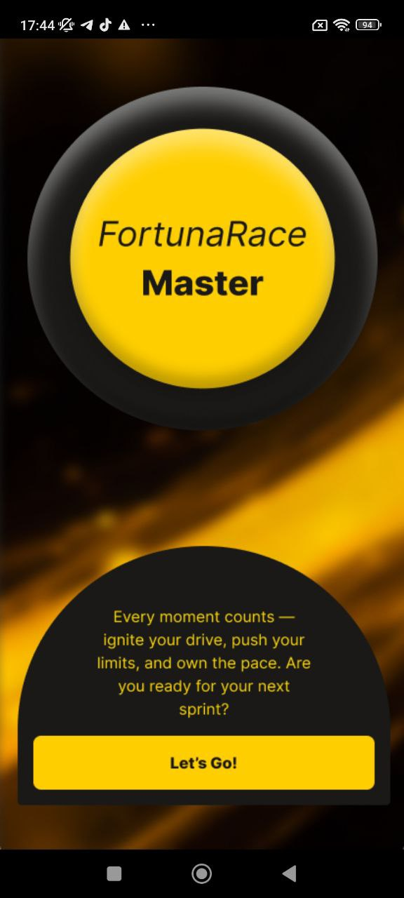
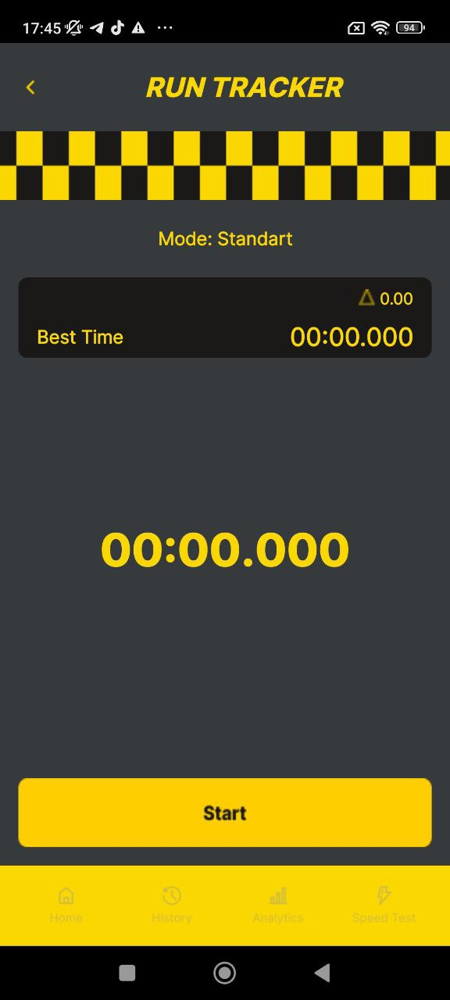
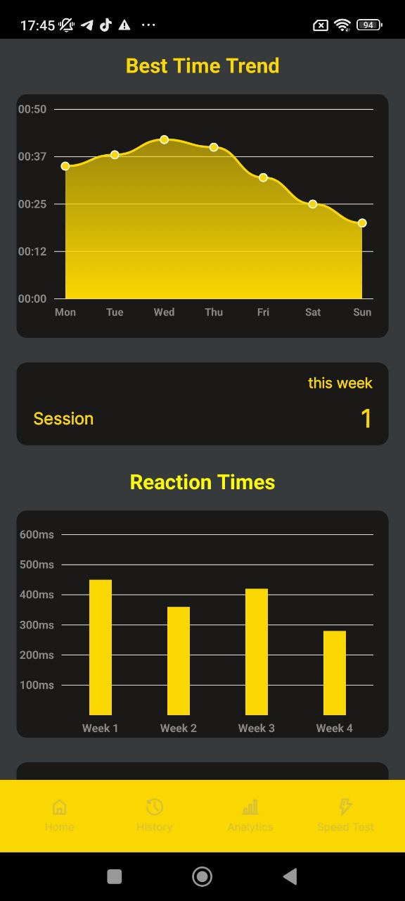
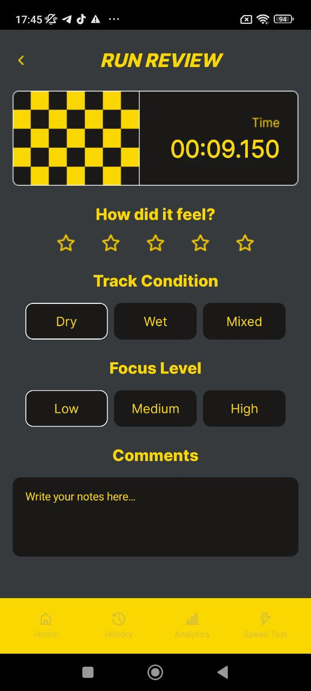
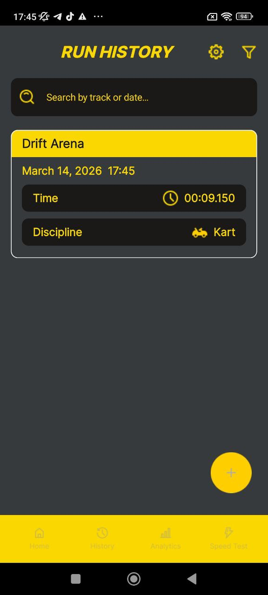

Precise run timing
Capture run time clearly and keep focus on performance with a simple timing interface made for speed.
Fortuna Race Master helps drivers and riders track time, analyze progress, review sessions and turn every training run into measurable performance.


This landing page uses your app screens as part of the story: timing, analytics, history and run review are shown as performance tools, not just random screenshots in a gallery.
Fortuna Race Master combines timing, review and structured session history in one racing-focused mobile workflow.
Capture run time clearly and keep focus on performance with a simple timing interface made for speed.
Understand progress faster with visual trends, weekly reaction comparisons and summary charts.
Store previous sessions in one place and quickly find runs by date, track or discipline.
Review how the run felt, note track condition and keep useful comments for later comparison.
Adapt the workflow for car, kart or moto sessions without overcomplicating the experience.
Designed with dark contrast, strong yellow accents and a focused motorsport interface language.
The home view gives the app a strong identity right away. It introduces the racing mood, highlights the latest run and guides the user directly into a new session.
The run tracker screen is one of the strongest visuals in the app. Big timing numbers, a simple mode view and a strong start action make the experience feel direct and competitive.
Instead of hiding stats behind complexity, the analytics screen shows improvement in a visual way that feels clear and useful.

The history screen works as a practical archive. It helps the user find runs by track or date and keeps important timing data visible in one clean card.

A good run is more than a result. Track condition, focus level and personal comments make every session more useful for future analysis.

Below is a focused screen carousel. I used only the strongest views so the site feels premium and structured instead of overloaded.
The home dashboard immediately communicates the product identity and gives fast access to the main user flow.
Big timer visuals and strong contrast keep the interface intense, focused and easy to use while training.
Graphs and weekly comparisons help users understand whether they are improving over time.
Keep track of results and find useful past runs without losing the context of track and discipline.
Conditions, focus level and notes make it easier to learn from every run instead of just storing a number.
Review cards are written as polished starter testimonials. Later ты сможешь заменить их на реальные.
“The strongest part is how focused the app feels. It doesn’t waste time and gives exactly what I need before and after a run.”
“Analytics and run history make the sessions much more useful. You can actually see progress instead of guessing.”
“The interface looks like a real racing product. Dark, sharp, energetic and easy to navigate even during training.”
Download Fortuna Race Master and turn timing, reaction and run review into one smooth racing workflow.